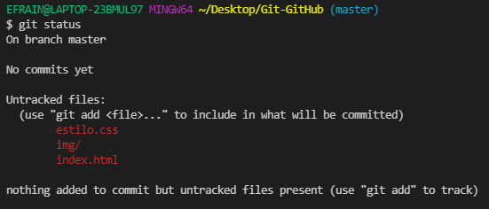
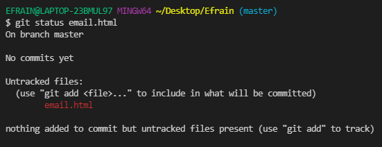
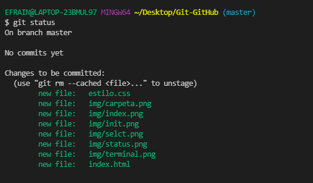

El comando git status se usa para mostrar el estado del repositorio y el área de preparación. Nos permite ver los archivos y cambios rastreados y no rastreados. Este comando no mostrará ningún registro o información deconfirmación.
Para poder el estatus de todas la paginas solo se ejecuta Git status, por el momento severan inactivos
si desea ver el status de un solo archivo ejecute git status "nombre_archivo", como se muestra en la imagen
;de esta manera seven los repositorios activos
